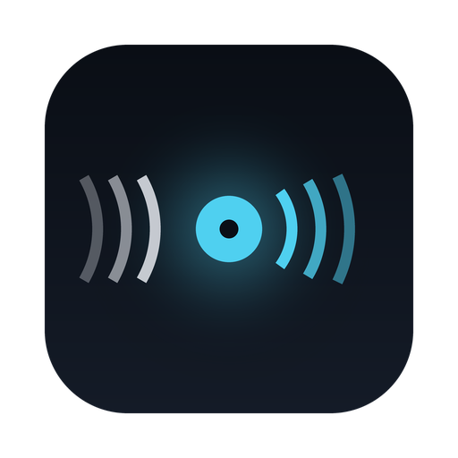

Sit at a table where everyone speaks something else, put your AirPods in, and hear it in your own language. It listens continuously, waits until a thought is complete the way an interpreter does, and speaks it in your ear while it keeps listening. Recognition, translation and the voice all run on the phone or Mac in front of you.

The screen is mostly not looked at. The English is in your ear; the phone is in a pocket or face down on the table.
So it answers three things at a glance. Whether it is on: one round button, with the microphone level as a ring around it. What it is doing: one line — listening, translating, or speaking and how far behind. What was just said: the newest translation large, with what was actually said under it, and a language chip when the language is certain.
The live screen, rebuilt from the run in the next section rather than photographed from someone's real conversation.
The problem
Translation apps wait for you to stop talking, or translate every half-sentence as it comes. The first is a conversation in turns; the second is a stream of fragments with the verb still to come, which in German or Hungarian is often the part that mattered.
A human interpreter does neither. They let the speaker run ahead, hold on until a thought is complete, then say it — a few seconds behind, all the way through. That is the behaviour this copies: listen without stopping, cut at the end of a thought, translate it with what came before as context, and speak it while the next one is already being heard.
It is built for one table in particular: Polish, Hungarian and Romanian around an English speaker, with Dutch words dropped in. English is understood already, so it is shown, kept as context and never spoken back.
What it does
[ 0.00– 3.52] clause │ Also, ich wollte eigentlich nur kurz sagen, #0 lag 2.7 s → Also, I just wanted to say briefly… [ 3.90– 6.70] clause │ dass wir morgen nicht um neun, #1 lag 4.6 s → that we won’t be meeting at nine o’clock. [ 6.92– 9.80] sentence │ sondern erst um halb elf anfangen. #2 lag 4.2 s → but to start at 10:30. [10.10–13.14] force │ Der Grund ist, dass der Zug aus München [13.52–15.92] pause │ wegen Bauarbeiten ausfällt. #3 lag 5.2 s → The reason is that the train from Munich… #4 lag 5.0 s → …is cancelled due to construction work. [17.98–21.74] clause │ Wer kann, sollte vielleicht mit dem Auto kommen, #5 lag 4.6 s → Those who can should perhaps come by car. lag median 5.0 s, max 6.6 s over 8 pieces
The project's German sample through the native engine with TranslateGemma, in real time on an M1 Mac. Lag is from the end of what was said to the start of its English. force marks the five-second ceiling: the sentence ran on, so it was cut and finished in the next piece.
“halb elf” is 10:30, not half past eleven. A 4B model reads European clock times the English way and got 3 of 10 right, so German and Dutch half hours and quarters are rewritten to digits before the model sees them. On held-out times in seven languages: 14 of 14.
[ 2.30– 5.90] clause │ No, scusate. Il treno parte alle 7 e un quarto, #1 → No, sorry. The train leaves at 7:15. [ 8.26–12.26] flush │ Quindi ci vediamo in stazione verso le 7-5. #3 unclear, not spoken The clock time was unclear in speech recognition. Please repeat it.
When recognition writes sette meno cinque as 7-5, there is no telling whether that was 6:55 or something else. It is shown with a request to repeat it, and not spoken.
On the iPhone and the Mac
iPhone · iOS 26+
AirPods sit closer to the people talking than a phone in a pocket. Recorded in full quality where they support it, and asked to hear the whole room rather than mainly you.
iPhone · Mac
For a phone on the table when nobody has headphones: translations on screen, nothing spoken over the room.
iPhone
Interpreting is foreground-only, so the screen stays awake while live. The moon turns it black but for the last line and a Stop button.
iPhone · Mac
Everything that isn't your language is translated. Naming the languages at the table instead makes a misheard Russian for a Polish speaker stay quiet.
iPhone · Mac
Pick the language you hear: any of the voice's eight. What is already in it is shown and kept as context, not spoken. Untrained languages, with an accent, are behind a setting.
Getting it
There is no App Store build. The apps need an Apple silicon Mac with macOS 14, or an iPhone with 8 GB of memory, and Xcode to build them. espeak-ng's data comes from voice-forge, cloned beside this repository, and the voice from voice-polyglot. Everything to build them is here: the app's source and build scripts, and in voice-polyglot the whole pipeline the voice was made with, from the scripts it read to training and export. The voice itself is fetched by the build from voice-polyglot's releases, the newest one each time: still in training, marked with an asterisk and the epoch it was exported at.
# beside each other git clone https://github.com/snepssen/voice-forge git clone https://github.com/snepssen/interpreter-forge cd interpreter-forge apple/build.sh # the Mac app: apple/Interpreter.app apple/iOS/build-ios.sh # the iPhone app, onto a connected iPhone uv run translate-core live # the Python rig the apps were measured against
The iPhone build signs with your own development team, set in apple/iOS/project.yml. The first launch downloads speech recognition and the translator you choose — about 3 GB, best on Wi-Fi.
In depth
mic ─▶ voice activity ─▶ segmenter ─▶ translate ─▶ voice ─▶ headphones
▲ │
└ ASR ◀┘ re-reads what is not yet cut, every 0.5 s
Recognition runs on the Neural Engine and translation on the GPU, side by side, so hearing the next thought never waits for the last one to be spoken.
Every half second the uncommitted tail of speech is transcribed again, and words count as settled once two passes agree on them. A piece is cut at the end of a sentence that speech has carried on past, at a pause long enough for this speaker, or at a comma once it has run four seconds. At five it is cut wherever it can be, and at six wherever it stands; the next piece picks up the sentence.
A general model such as Qwen is also asked, in a single forward pass, whether the words so far can be translated yet. That is why it speaks sooner in quick conversation: it can cut at “Nie wiem, czy zdążymy na pociąg.” and hold at “Nie wiem, czy.” TranslateGemma cannot be asked, so it relies on the rules alone, and translates better.
Speech does not wait for the interpreter, and people speak unevenly: they pause for effect, think aloud, build up slowly. That is meant to queue, not be cut; the pauses are context for the next piece. Pieces that pile up while it is busy go out together as one translation, and once a second of speech is queued the voice speeds up, to at most 1.3 times. Everything is translated in full.
Some listeners would rather keep up than hear all of a long story. Summarise to keep up, off unless chosen, says only the gist once the interpreter is behind: “complaining about back pain and their boss.” It needs a translator that takes instructions, Qwen or Gemma 4.
Samples read clearly are the easy case. The segmenter was tuned on a 70-minute recording of English, Polish and Hungarian, with Dutch words in it, from an iPhone's bottom microphone. What that changed:
The interpreter speaks with snepssen: one small Piper voice that speaks English, Polish, Hungarian, German, Dutch, French, Spanish and Italian as the same character, whispery, tired and steady, rendering a sentence in milliseconds on the device.
It began as an English voice. Its other languages were taught from speech generated with the same vocal profile, read from scripts written for each language's hard sounds, cut, checked line by line and trained together. Sounds the phonemizer gets wrong, Polish hard dz, Hungarian silent h, or shares across languages that say them differently, German, Dutch and Italian r, are corrected before the voice sees them, by voice-polyglot's Polyphon; the apps carry a port of it held to the original symbol for symbol. Each language plays at its own pace, picked by ear, since the new languages were read faster than the English.
It is still training. Native listeners understood its Polish and Hungarian; German and Dutch sound native enough to be rushed. A better-trained voice is a rebuild away.
The voice also makes the test speech. Each language is spoken by snepssen, heard by the app's speech recognition and interpreted into another, which tests the whole chain and how legible the voice is at once:
| Snepssen speaks | Interpreted into | Words recognition heard right |
|---|---|---|
| French | Italian | 94% |
| English | Polish | 92% |
| Dutch | Spanish | 90% |
| Spanish | Dutch | 90% |
| German | Hungarian | 86% |
| Italian | French | 86% |
| Hungarian | German | 85% |
| Polish | English | 82% |
TranslateGemma, in real time on an M1 Mac, a halting announcement or a fluent one per language. The misses that mattered were clock times: fél tizenegykor heard wrong became the wrong time in German. That is the next thing to make safe.
Models are picked in the app on first launch, and can be added, switched or deleted in Settings. One translator is in memory at a time; on an 8 GB iPhone 17 a 4B model fits beside recognition with the increased-memory entitlement. Measured on the same 26 lines in ten languages and a 17-case test of complete thoughts:
| Translator | Meaning errors in 26 lines | Judges a complete thought | Memory |
|---|---|---|---|
| TranslateGemma 4B recommended | 0, the most natural English | no — cuts on pauses and punctuation | 2.6 GB |
| Qwen3 4B | 3 | 17 of 17 | 2.8 GB |
| Gemma 4 E4B | 1 | 13 of 17 | 4.7 GB — a Mac, or a 12 GB iPhone |
| Gemma 4 E2B | 5 | 12 of 17 | 3.0 GB |
| EuroLLM 1.7B 4 GB iPhones | about 4 in 21; the gist | not asked — 9 of 17 | 1.4 GB — fits an iPhone 13 |
| Recognition | Languages | Ten seconds of speech, M1 Mac |
|---|---|---|
| Parakeet Ultra default | 25 European | 0.19 s, on the Neural Engine |
| Whisper large-v3 Turbo | 100, Norwegian among them | 2.42 s |
Into English, TranslateGemma's is the most natural; into Polish and Hungarian the comparison is still to be made.
The goal does not change: be included in a conversation you would otherwise sit out, in your own language, with nothing leaving your device.
now
Three to four days of training, a check-in every 25 epochs, until the voice is indistinguishable by ear; the apps pick up each better export.
next
A clock time or number recognition was unsure of is asked about, not spoken: the wrong time said with confidence is the worst mistake it makes.
next
Many voices, crosstalk, a noisy kitchen: the 70-minute recording rerun after every large change, and new ones in other languages.
next
TranslateGemma, Qwen and Gemma 4 compared into Polish and Hungarian, not only English, and the best chosen for each.
later
Voice Forge's per-word duration control in the polyglot voice, for the odd phrase that still rushes inside a sentence.
later
Voice Forge, voice-polyglot and this app each fetching the latest of the others, instead of keeping copies.
later
The voice and phonemizer already run there; recognition and translation have Android runtimes. As phones gain memory, the room for a better translator grows with them.
when permitted
Publishing depends on the permission of everyone whose work is inside: espeak-ng and Piper are GPL, and the voice was trained on speech generated with Suno. This app is the working demonstration that request will rest on. Until then it is what it is today: open source, built from source.
It is not a certified interpreter, and should not be relied on where a mistranslation costs more than a repeated question: a doctor, a contract, a police station. A 4B model gets most things right and some things confidently wrong, and short or garbled phrases are where it goes wrong most.
Recognition can invent words from faint speech or noise, and it covers 25 European languages; Norwegian and the rest need Whisper, which is about ten times slower. It speaks eight languages well; others only through a setting, with an accent. Into languages other than English the translators are less tested, and Qwen's Polish is rough. On the iPhone it works only while the app is open.
It is still being tested in the field. The numbers above are from recordings and one kitchen table, not from many people in many rooms.
The workshop
Takes ObjCExceptions, SileroVAD, SampleBuffer, ModelStore and PromptCache from speech-core, at 0.5.0.
The wider workshop
Move between guided-meditation authoring, measured speech, live interpreting, a voice companion, lyric video, delivery validation, keeping a Downloads folder empty, and the small field tools that support all of them, on one voice, one speech engine and one hearing layer they share.
Assemble guided sessions and keep published maps beside what was actually found.
Explore Gateway Forge →A transparent Piper workbench for timing, pronunciation, and honest audio export.
Explore Voice Forge →Karaoke and narration video with a vector visor face that mouths every word.
Explore Protoke →Check a finished file against where it is going, and correct it without touching the original.
Explore Media Preflight →Fetch from a link or convert what you already have, without re-encoding what it does not have to.
Explore siphon →Empty the Downloads funnel into structure the folder taught it, and undo any of it.
Explore auto-sort →Hear the table in English a few seconds behind, cut at the end of each thought, on your own phone.
Explore Interpreter →A local voice companion for Mac, iPhone and iPad, with a protogen LED-visor face.
Explore companion-forge →Small utilities for audio inspection, corpus work, authoring, and repeatable checks.
Open the toolbox →Teaching one small voice to speak eight languages, and releasing it for every app that speaks.
Open the repository →The speech engine the apps share: espeak-ng, the phonemizer and Piper inference, from one source.
Open the repository →The hearing layer Interpreter and companion-forge share: ObjCExceptions, SileroVAD, SampleBuffer and ModelStore, from one source.
Open the repository →The builder and project network every page here shares, kept in one place.
Open the repository →Get in touch
There is no analytics here and no crash reporter, so a failure has no way of reaching me on its own.
It has not been run on Android yet. If you use it on it, say what happened, working or not.